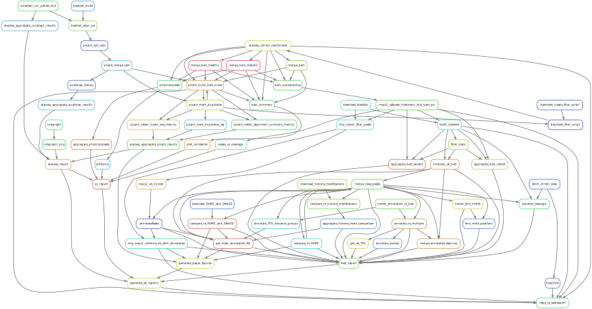
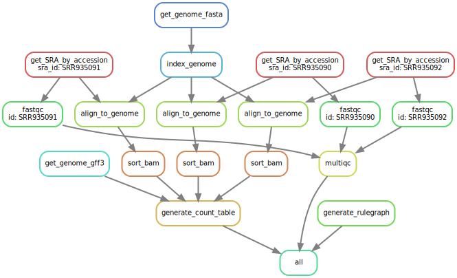

1 Introduction
A workflow management system (WfMS) is a piece of software that sets up, performs and monitors a defined sequence of computational tasks (i.e. “a workflow”). Snakemake is a WfMS that was developed in the bioinformatics community, and as such it has a number of features that make it particularly well-suited for creating reproducible and scalable data analyses.
First of all the language you use to formulate your workflows is based on Python, which is a language with strong standing in academia. However, users are not required to know how to code in Python to work efficiently with Snakemake. Workflows can easily be scaled from your desktop to server, cluster, grid or cloud environments. This makes it possible to develop a workflow on your laptop, maybe using only a small subset of your data, and then run the real analysis on a cluster. Snakemake also has several features for defining the environment with which each task is carried out. This is important in bioinformatics, where workflows often involve running a large number of small third-party tools.
Snakemake is primarily intended to work on files (rather than for example streams, reading/writing from databases or passing variables in memory). This fits well with many fields of bioinformatics, notably next-generation sequencing, that often involve computationally expensive operations on large files. It’s also a good fit for a scientific research setting, where the exact specifications of the final workflow aren’t always known at the beginning of a project.
Lastly, a WfMS is a very important tool for making your analyses reproducible. By keeping track of when each file was generated, and by which operation, it is possible to ensure that there is a consistent “paper trail” from raw data to final results. Snakemake also has features that allow you to package and distribute the workflow, and any files it involves, once it’s done.
This tutorial depends on files from the course GitHub repo. Take a look at the setup for instructions on how to set it up if you haven’t done so already, then open up a terminal and go to workshop-reproducible-research/tutorials/snakemake and activate your snakemake-env Conda environment.
2 The basics
In this part of the tutorial we will create a very simple workflow from scratch, in order to show the fundamentals of how Snakemake works. The workflow will take two files as inputs, a.txt and b.txt, and the purpose is to convert the text in the files to upper case and then to concatenate them.
Run the following shell commands. The first one will make an empty file named Snakefile, which will later contain the workflow. The second and third commands generate two files containing some arbitrary text.
touch Snakefile
echo "This is a.txt" > a.txt
echo "This is b.txt" > b.txtThen open Snakefile in your favourite text editor. A Snakemake workflow is based on rules which take some file(s) as input, performs some type of operation on them, and generate some file(s) as outputs. Here is a very simple rule that produces a.upper.txt as an output, using a.txt as input. Copy this rule to your Snakefile and save it.
rule convert_to_upper_case:
output:
"a.upper.txt"
input:
"a.txt"
shell:
"""
tr [a-z] [A-Z] < {input} > {output}
"""Indentation is important in Snakefiles, so make sure that you have the correct number of spaces before input/output/shell and their respective subsections. The number of spaces per level doesn’t matter as long as you’re consistent. Here we use four, but you could just as well use two for a more compact look. Don’t use tabs (unless your editor automatically converts them to spaces).
Rules can be given names, here it’s convert_to_upper_case. While rule names are not strictly necessary we encourage you to use them and to make an effort to name your rules in a way that makes it easy to understand the purpose of the rule, as rule names are one of the main ways to interact with the workflow. The shell section (or directive) contains the shell commands that will convert the text in the input file to upper case and send it to the output file. In the shell command string, we can refer to elements of the rule via curly brackets. Here, we refer to the output file by specifying {output} and to the input file by specifying {input}. If you’re not very familiar with Bash, this particular command can be read like “send the contents of a.txt to the program tr, which will convert all characters in the set [a-z] to the corresponding character in the set [A-Z], and then send the output to a.upper.txt”.
Now let’s run our first Snakemake workflow. When a workflow is executed Snakemake tries to generate a set of target files. Target files can be specified via the command line (or, as you will see later, in several other ways). Here we ask Snakemake to make the file a.upper.txt. We can specify the file containing our rules with -s but since the default behaviour of Snakemake is to look for a file called Snakefile in either the working directory or in a subdirectory called workflow/ we don’t need to specify that here. It’s good practice to first run with the flag -n (or --dry-run), which will show what Snakemake plans to do without actually running anything, and you also need to specify how many cores to be used for the workflow with --cores or -c. For now, you only need 1 so set -c 1. You can also use the flag -p, for showing the shell commands that it will execute, and the flag -r for showing the reason for running a specific rule. snakemake --help will show you all available flags.
$ snakemake -n -c 1 -r -p a.upper.txt
Building DAG of jobs...
Job stats:
job count min threads max threads
--------------------- ------- ------------- -------------
convert_to_upper_case 1 1 1
total 1 1 1
[Mon Oct 25 16:48:43 2021]
rule convert_to_upper_case:
input: a.txt
output: a.upper.txt
jobid: 0
reason: Missing output files: a.upper.txt
resources: tmpdir=/var/folders/p0/6z00kpv16qbf_bt52y4zz2kc0000gp/T
tr [a-z] [A-Z] < a.txt > a.upper.txt
Job stats:
job count min threads max threads
--------------------- ------- ------------- -------------
convert_to_upper_case 1 1 1
total 1 1 1
This was a dry-run (flag -n). The order of jobs does not reflect the order of execution.You can see that Snakemake plans to run one job: the rule convert_to_upper_case with a.txt as input and a.upper.txt as output. The reason for doing this is that it’s missing the file a.upper.txt. Now execute the workflow without the -n flag and check that the contents of a.upper.txt is as expected. Then try running the same command again. What do you see? It turns out that Snakemake only reruns jobs if there have been changes to either the input files, or the workflow itself. This is how Snakemake ensures that everything in the workflow is up to date. We will get back to this shortly.
What if we ask Snakemake to generate the file b.upper.txt?
$ snakemake -n -c 1 -r -p b.upper.txt
Building DAG of jobs...
MissingRuleException:
No rule to produce b.upper.txt (if you use input functions make sure that they don't raise unexpected exceptions).That didn’t work well. We could copy the rule to make a similar one for b.txt, but that would be a bit cumbersome. Here is where named wildcards come in; one of the most powerful features of Snakemake. Simply change the input from input: "a.txt" to input: "{some_name}.txt" and the output to output: "{some_name}.upper.txt". Now try asking for b.upper.txt again.
Tada! What happens here is that Snakemake looks at all the rules it has available (actually only one in this case) and tries to assign values to all wildcards so that the targeted files can be generated. In this case it was quite simple, you can see that it says that wildcards: some_name=b, but for large workflows and multiple wildcards it can get much more complex. Named wildcards is what enables a workflow (or single rules) to be efficiently generalized and reused between projects or shared between people.
It seems we have the first part of our workflow working, now it’s time to make the second rule for concatenating the outputs from convert_to_upper_case. The rule structure will be similar; the only difference is that here we have two inputs instead of one. This can be expressed in two ways, either with named inputs like this:
input:
firstFile="...",
secondFile="..."
shell:
"""
some_function {input.firstFile} {input.secondFile}
"""Or with indexes like this:
input:
"...",
"..."
shell:
"""
some_function {input[0]} {input[1]}
"""If you have multiple inputs or outputs they need to be delimited with a comma (as seen above). This is a very common mistake when writing Snakemake workflows. The parser will complain, but sometimes the error message can be difficult to interpret.
Now try to construct this rule yourself and name it concatenate_a_and_b. The syntax for concatenating two files in Bash is cat first_file.txt second_file.txt > output_file.txt. Call the output c.txt. Run the workflow in Snakemake and validate that the output looks as expected.
Wouldn’t it be nice if our workflow could be used for any files, not just a.txt and b.txt? We can achieve this by using named wildcards (or in other ways as we will discuss later). As we’ve mentioned, Snakemake looks at all the rules it has available and tries to assign values to all wildcards so that the targeted files can be generated. We therefore have to name the output file in a way so that it also contains information about which input files it should be based on. Try to figure out how to do this yourself. If you’re stuck you can look at the spoiler below, but spend some time on it before you look. Also rename the rule to concatenate_files to reflect its new more general use.
rule concatenate_files:
output:
"{first}_{second}.txt"
input:
"{first}.upper.txt",
"{second}.upper.txt"
shell:
"""
cat {input[0]} {input[1]} > {output}
"""We can now control which input files to use by the name of the file we ask Snakemake to generate. Run the workflow without the flag -n (or --dry-run) to execute both rules, providing one core with -c 1 (or --cores 1):
$ snakemake a_b.txt -c 1
Building DAG of jobs...
Using shell: /bin/bash
Provided cores: 1 (use --cores to define parallelism)
Rules claiming more threads will be scaled down.
Job stats:
job count min threads max threads
--------------------- ------- ------------- -------------
concatenate_files 1 1 1
convert_to_upper_case 2 1 1
total 3 1 1
Select jobs to execute...
[Mon Oct 25 16:51:52 2021]
rule convert_to_upper_case:
input: b.txt
output: b.upper.txt
jobid: 2
wildcards: some_name=b
resources: tmpdir=/var/folders/p0/6z00kpv16qbf_bt52y4zz2kc0000gp/T
[Mon Oct 25 16:51:53 2021]
Finished job 2.
1 of 3 steps (33%) done
Select jobs to execute...
[Mon Oct 25 16:51:53 2021]
rule convert_to_upper_case:
input: a.txt
output: a.upper.txt
jobid: 1
wildcards: some_name=a
resources: tmpdir=/var/folders/p0/6z00kpv16qbf_bt52y4zz2kc0000gp/T
[Mon Oct 25 16:51:53 2021]
Finished job 1.
2 of 3 steps (67%) done
Select jobs to execute...
[Mon Oct 25 16:51:53 2021]
rule concatenate_files:
input: a.upper.txt, b.upper.txt
output: a_b.txt
jobid: 0
wildcards: first=a, second=b
resources: tmpdir=/var/folders/p0/6z00kpv16qbf_bt52y4zz2kc0000gp/T
[Mon Oct 25 16:51:53 2021]
Finished job 0.
3 of 3 steps (100%) doneNeat!
You can name a file whatever you want in a Snakemake workflow, but you will find that everything falls into place much nicer if the filename reflects the file’s path through the workflow, e.g. sample_a.trimmed.deduplicated.sorted.bam.
The input to Snakemake rules have to be strings or lists of strings, however you don’t have to specify these strings directly in the input: section of rules. Instead, you can specify Python functions that return strings or lists of strings. This allows you to supply input to rules that can vary depending on the wildcards being used. We’ll get to why that’s useful in a sec, but first let’s put it to use for the conatenate_files rule. Because Snakemake is based on Python we can mix rule definitions with standard python code in the same file. Add a function just above the concatenate_files that looks like this:
def concat_input(wildcards):
files = [wildcards.first + ".upper.txt", wildcards.second + ".upper.txt"]
return filesThis is the syntax to define a function in Python. The def concat_input(wildcards): line shows the name of the function (concat_input) and the variable passed to the function (the wildcards object). In the second line we add two items to a list that we call files and add the ‘.upper.txt’ suffix to each item. Finally, the function returns the list. Because the concatenate_files rule has two wildcards {first} and {second} we can access the actual strings in the wildcards object using wildcards.first and wildcards.second. When we ask for the file a_b.txt then wildcards.first == 'a' and wildcards.second == 'b'. This means that the files list returned by the function will be ['a.upper.txt', 'b.upper.txt']. To see for yourself you can add the following line to the function, just before the return statement: print (wildcards.first, wildcards.second, files). This way the wildcard values and the list will be printed to the terminal when you run Snakemake.
Now that we’ve defined the function to use as input, we can use it in the concatenate_files rule. Update the rule so that it looks like this:
rule concatenate_files:
output:
"{first}_{second}.txt"
input:
concat_input
shell:
"""
cat {input[0]} {input[1]} > {output}
"""You see that the name of the function concat_input is added in place of the input strings. When using the wildcards object in input functions like this we have to call the function without any arguments (simply concat_input) and the function has to be defined to accept a single argument (here def concat_input(wildcards):). Let’s run the workflow with the updated rule. Remove the file a_b.txt or add -f to the Snakemake command to force a re-run:
snakemake a_b.txt -c 1 -fIf you added the print statement to the function you should see the following printed to your terminal:
Building DAG of jobs...
a b ['a.upper.txt', 'b.upper.txt']Followed by the rest of the workflow output.
There are a number of possible use-cases for input functions. For example, say that you have an experiment where you’ve sequenced three samples: sample1, sample2 and sample3 with the corresponding FASTQ files under data/ and you want to write a rule that outputs the statistics of all sequences within each sample. However, samples sample1 and sample2 have been sequenced with single-end technology while sample3 have paired-end reads. The single-end samples will have only one FASTQ file whereas the paired-end sample will have two (one for each sequenced end). Thus, depending on the name of the sample the input to the function will either be one file or two. With input functions we can write a generalized rule that can handle both types:
def fastq_input(wildcards):
if wildcards.sample_id in ["sample1", "sample2"]:
return "data/" + wildcards.sample_id + ".fastq.gz"
else:
return ["data/" + wildcards.sample_id + ".R1.fastq.gz",
"data/" + wildcards.sample_id + ".R2.fastq.gz"]
rule fastq_stats:
output:
"{sample_id}.stats.txt"
input:
fastq_input
shell:
"""
seqtk comp {input} > {output}
"""As you can see, the fastq_stats rule outputs one file {sample_id}.stats.txt and takes as input the value returned from the fastq_input function. In this function the sample id is evaluated and if it is either sample1 or sample2 (our single-end samples) then the function returns a single string which is the path to the FASTQ file for that sample. Otherwise, the function returns a list containing both the R1 and R2 files for the sample. In the shell: directive of the rule the seqtk comp command is run on the input and the output is sent to the output file.
In this section we’ve learned:
- How a simple Snakemake rule looks.
- How to define target files when executing a workflow.
- How to use named wildcards for writing generic and flexible rules.
- How to use input functions in rules
3 Visualising workflows
All that we’ve done so far could quite easily be done in a simple shell script that takes the input files as parameters. Let’s now take a look at some of the features where a WfMS like Snakemake really adds value compared to a more straightforward approach. One such feature is the possibility to visualize your workflow. Snakemake can generate three types of graphs, one that shows how the rules are connected, one that shows how the jobs (i.e. an execution of a rule with some given inputs/outputs/settings) are connected, and finally one that shows rules with their respective input/output files.
First we look at the rule graph. The following command will generate a rule graph in the dot language and pipe it to the program dot, which in turn will save a visualization of the graph as a PNG file (if you’re having troubles displaying PNG files you could use SVG or JPG instead).
If you added the print(wildcards.first,wildcards.second,files) statement to the concat_input function in the previous section you need to remove that line before running the commands below.
snakemake --rulegraph a_b.txt | dot -Tpng > rulegraph.pngThis looks simple enough, the output from the rule convert_to_upper_case will be used as input to the rule concatenate_files.
For a more typical bioinformatics project it can look something like this when you include all the rules from processing of the raw data to generating figures for the paper.

While saying that it’s easy to read might be a bit of a stretch, it definitely gives you a better overview of the project than you would have without a WfMS.
The second type of graph is based on the jobs, and looks like this for our little workflow (use --dag instead of --rulegraph).
snakemake --dag a_b.txt | dot -Tpng > jobgraph.pngThe main difference here is that now each node is a job instead of a rule. You can see that the wildcards used in each job are also displayed. Another difference is the dotted lines around the nodes. A dotted line is Snakemake’s way of indicating that this rule doesn’t need to be rerun in order to generate a_b.txt. Validate this by running snakemake -n -r a_b.txt and it should say that there is nothing to be done.
We’ve discussed before that one of the main purposes of using a WfMS is that it automatically makes sure that everything is up to date. This is done by recursively checking that outputs are always newer than inputs for all the rules involved in the generation of your target files. Now try to change the contents of a.txt to some other text and save it. What do you think will happen if you run snakemake -n -r a_b.txt again?
$ snakemake -n -r a_b.txt
Building DAG of jobs...
Job stats:
job count min threads max threads
--------------------- ------- ------------- -------------
concatenate_files 1 1 1
convert_to_upper_case 1 1 1
total 2 1 1
[Mon Oct 25 17:00:02 2021]
rule convert_to_upper_case:
input: a.txt
output: a.upper.txt
jobid: 1
reason: Updated input files: a.txt
wildcards: some_name=a
resources: tmpdir=/var/folders/p0/6z00kpv16qbf_bt52y4zz2kc0000gp/T
[Mon Oct 25 17:00:02 2021]
rule concatenate_files:
input: a.upper.txt, b.upper.txt
output: a_b.txt
jobid: 0
reason: Input files updated by another job: a.upper.txt
wildcards: first=a, second=b
resources: tmpdir=/var/folders/p0/6z00kpv16qbf_bt52y4zz2kc0000gp/T
Job stats:
job count min threads max threads
--------------------- ------- ------------- -------------
concatenate_files 1 1 1
convert_to_upper_case 1 1 1
total 2 1 1
This was a dry-run (flag -n). The order of jobs does not reflect the order of execution.Were you correct? Also generate the job graph and compare to the one generated above. What’s the difference? Now rerun without -n and validate that a_b.txt contains the new text (don’t forget to specify -c 1). Note that Snakemake doesn’t look at the contents of files when trying to determine what has changed, only at the timestamp for when they were last modified.
We’ve seen that Snakemake keeps track of if files in the workflow have changed, and automatically makes sure that any results depending on such files are regenerated. What about if the rules themselves are changed? It turns out that since version 7.8.0 Snakemake keeps track of this automatically.
Let’s say that we want to modify the rule concatenate_files to also include which files were concatenated.
rule concatenate_files:
output:
"{first}_{second}.txt"
input:
"{first}.upper.txt",
"{second}.upper.txt"
shell:
"""
echo 'Concatenating {input}' | cat - {input[0]} {input[1]} > {output}
"""It’s not really important for the tutorial, but the shell command used here first outputs “Concatenating” followed by a space delimited list of the files in input. This string is then sent to the program cat where it’s concatenated with input[0] and input[1] (the parameter - means that it should read from standard input). Lastly, the output from cat is sent to {output}.
If you now run the workflow as before you should see:
rule concatenate_files:
input: a.upper.txt, b.upper.txt
output: a_b.txt
jobid: 0
reason: Code has changed since last execution
wildcards: first=a, second=bBecause although no files involved in the workflow have been changed, Snakemake recognizes that the workflow code itself has been modified and this triggers a re-run.
Snakemake is aware of changes to four categories of such “rerun-triggers”: “input” (changes to rule input files), “params” (changes to the rule params section), “software-env” (changes to Conda environment files specified by the conda: directive) and “code” (changes to code in the shell:, run:, script: and notebook: directives).
Prior to version 7.8.0, only changes to the modification time of input files would trigger automatic re-runs. To run Snakemake with this previous behaviour you can use the setting --rerun-triggers mtime at the command line. Change the shell: section of the concatenate_files rule back to the previous version, then try running: snakemake -n -r a_b.txt --rerun-triggers mtime and you should again see Nothing to be done (all requested files are present and up to date).
You can also export information on how all files were generated (when, by which rule, which version of the rule, and by which commands) to a tab-delimited file like this:
snakemake a_b.txt -c 1 -D > summary.tsvThe content of summary.tsv is shown in the table below:
| output_file | date | rule | version | log-file(s) | input-file(s) | shellcmd | status | plan |
|---|---|---|---|---|---|---|---|---|
| a_b.txt | Mon Oct 25 17:01:46 2021 | concatenate_files | - | a.upper.txt,b.upper.txt | cat a.upper.txt b.upper.txt > a_b.txt | rule implementation changed | update pending | |
| a.upper.txt | Mon Oct 25 17:01:46 2021 | convert_to_upper_case | - | a.txt | tr [a-z] [A-Z] < a.txt > a.upper.txt | ok | no update | |
| b.upper.txt | Mon Oct 25 17:01:46 2021 | convert_to_upper_case | - | b.txt | tr [a-z] [A-Z] < b.txt > b.upper.txt | ok | no update |
You can see in the second last column that the rule implementation for a_b.txt has changed. The last column shows if Snakemake plans to regenerate the files when it’s next executed. You can see that for the concatenate_files the plan is update pending because we generated the summary with the default behaviour of using all rerun-triggers.
You might wonder where Snakemake keeps track of all these things? It stores all information in a hidden subdirectory called .snakemake. This is convenient since it’s easy to delete if you don’t need it anymore and everything is contained in the project directory. Just be sure to add it to .gitignore so that you don’t end up tracking it with git.
By now you should be familiar with the basic functionality of Snakemake, and you can build advanced workflows with only the features we have discussed here. There’s a lot we haven’t covered though, in particular when it comes to making your workflow more reusable. In the following section we will start with a workflow that is fully functional but not very flexible. We will then gradually improve it, and at the same time showcase some Snakemake features we haven’t discussed yet. Note that this can get a little complex at times, so if you felt that this section was a struggle then you could move on to one of the other tutorials instead.
In this section we’ve learned:
- How to use
--dagand--rulegraphfor visualizing the job and rule graphs, respectively. - How Snakemake reruns relevant parts of the workflow after there have been changes.
- How Snakemake tracks changes to files and code in a workflow
4 The MRSA workflow
As you might remember from the intro, we are attempting to understand how lytic bacteriophages can be used as a future therapy for the multi-resistant bacteria MRSA (methicillin-resistant Staphylococcus aureus). In order to do this we have performed RNA-seq of three strains, one test and two controls. We have already set up a draft Snakemake workflow for the RNA-seq analysis and it seems to be running nicely. The rest of the Snakemake tutorial will be spent improving and making this workflow more flexible!
This section will leave a little more up to you compared to the previous one. If you get stuck at some point the final workflow after all the modifications is available in tutorials/git/Snakefile.
You are probably already in your snakemake-env environment, otherwise activate it (use conda info --envs if you are unsure).
Here we have one Conda environment for executing the whole Snakemake workflow. Snakemake also supports using explicit Conda environments on a per-rule basis, by specifying something like conda: rule-specific-env.yml in the rule definition and running Snakemake with the --use-conda flag. The given rule will then be run in the Conda environment specified in rule-specific-env.yml that will be created and activated on the fly by Snakemake. Note that by default Snakemake uses conda to generate the rule-specific environments. This behaviour can be changed by running with --conda-frontend conda, which will force Snakemake to use conda instead.
Let’s start by generating the rule graph so that we get an overview of the workflow. Here we have to specify the file with the rules using the -s flag to Snakemake since the path to the file differs from the default.
snakemake -s snakefile_mrsa.smk --rulegraph | dot -T png > rulegraph_mrsa.pngThere’s another difference in this command compared to the one we’ve used before, namely that we don’t define a target. In the toy example we used a_b.txt as a target, and the wildcards were resolved based on that. How come that we don’t need to do that here? It turns out that by default Snakemake targets the first rule in a workflow. By convention, we call this rule all and let it serve as a rule for aggregating the main outputs of the workflow.
Now take some time and look through the workflow file and try to understand how the rules fit together. Use the rule graph as aid. The rules represent a quite standard, although somewhat simplified, workflow for RNA-seq analysis. If you are unfamiliar with the purpose of the different operations (index genome, FastQC and so on), then take a look at the intro.
Also generate the job graph in the same manner. Here you can see that three samples will be downloaded: SRR935090, SRR935091, and SRR935092. The original sample files contain tens of millions of reads but for the purpose of this course we have sub-sampled them to 100,000 reads per sample, so that they are easy to manage, and made them available at the SciLifeLab Data Repository. These FASTQ files will then be quality controlled with FastQC and aligned to a genome. The QC output will be aggregated with MultiQC and the alignments will be used to generate a count table, i.e. a table that shows how many reads map to each gene for each sample. This count table is then what the downstream analysis will be based on.

Now try to run the whole workflow. Hopefully you see something like this.
Building DAG of jobs...
Using shell: /bin/bash
Provided cores: 1 (use --cores to define parallelism)
Rules claiming more threads will be scaled down.
Job stats:
job count min threads max threads
-------------------- ------- ------------- -------------
align_to_genome 3 1 1
all 1 1 1
fastqc 3 1 1
generate_count_table 1 1 1
generate_rulegraph 1 1 1
get_SRA_by_accession 3 1 1
get_genome_fasta 1 1 1
get_genome_gff3 1 1 1
index_genome 1 1 1
multiqc 1 1 1
sort_bam 3 1 1
total 19 1 1
Select jobs to execute...
[Mon Oct 25 17:13:47 2021]
rule get_genome_fasta:
output: data/ref/NCTC8325.fa.gz
jobid: 6
resources: tmpdir=/var/folders/p0/6z00kpv16qbf_bt52y4zz2kc0000gp/T
--2021-10-25 17:13:48-- ftp://ftp.ensemblgenomes.org/pub/bacteria/release-37/fasta/bacteria_18_collection/staphylococcus_aureus_subsp_aureus_nctc_8325/dna//Staphylococcus_aureus_subsp_aureus_nctc_8325.ASM1342v1.dna_rm.toplevel.fa.gz
=> ‘data/ref/NCTC8325.fa.gz’
Resolving ftp.ensemblgenomes.org (ftp.ensemblgenomes.org)... 193.62.197.75
Connecting to ftp.ensemblgenomes.org (ftp.ensemblgenomes.org)|193.62.197.75|:21... connected.
Logging in as anonymous ... Logged in!
==> SYST ... done. ==> PWD ... done.
.
.
[lots of stuff]
.
.
localrule all:
input: results/tables/counts.tsv, results/multiqc/multiqc.html, results/rulegraph.png
jobid: 0
resources: tmpdir=/var/folders/p0/6z00kpv16qbf_bt52y4zz2kc0000gp/T
[Mon Oct 25 17:14:38 2021]
Finished job 0.
19 of 19 steps (100%) doneAfter everything is done, the workflow will have resulted in a bunch of files in the directories data/ and results/. Take some time to look through the structure, in particular the quality control reports in results/multiqc/ and the count table in results/tables/.
In this section we’ve learned:
- How the MRSA workflow looks.
- How to run the MRSA workflow.
- Which output files the MRSA workflow produces.
5 Parameters
In a typical bioinformatics project, considerable efforts are spent on tweaking parameters for the various programs involved. It would be inconvenient if you had to change in the shell scripts themselves every time you wanted to run with a new setting. Luckily, there is a better option for this: the params keyword.
rule some_rule:
output:
"..."
input:
"..."
params:
cutoff=2.5
shell:
"""
some_program --cutoff {params.cutoff} {input} {output}
"""Most of the programs are run with default settings in the MRSA workflow and don’t use the params: directive. However, the get_SRA_by_accession rule is an exception. Here the remote address for each of the files to download is passed to the shell directive via:
def get_sample_url(wildcards):
samples = {
"SRR935090": "https://figshare.scilifelab.se/ndownloader/files/39539767",
"SRR935091": "https://figshare.scilifelab.se/ndownloader/files/39539770",
"SRR935092": "https://figshare.scilifelab.se/ndownloader/files/39539773"
}
return samples[wildcards.sample_id]
rule get_SRA_by_accession:
"""
Retrieve a single-read FASTQ file
"""
output:
"data/{sample_id}.fastq.gz"
params:
url = get_sample_url
shell:
"""
wget -O - {params.url} | seqtk sample - 25000 | gzip -c > {output[0]}
"""You may recognize this from page 2 of this tutorial where we used input functions to generate strings and lists of strings for the input: section of a rule. Using a function to return values based on the wildcards also works for params:. Here sample_id is a wildcard which in this specific workflow can be either SRR935090, SRR935091, or SRR935092. The wildcards object is passed to the function get_sample_url and depending on what output the rule is supposed to generate, wildcards.sample_id will take the value of either of the three sample ids. The samples variable defined in the function is a Python dictionary that has the URLs for each sample_id hard-coded. This dictionary is used to convert the value of the sample_id wildcard to a URL, which is returned by the function. Finally, in the shell: directive we access the url parameter with {params.url}. (We could have written three separate rules to download the samples, but it’s easy to see how that can become impractical.)
Let’s add another parameter to the get_SRA_by_accession rule. As you can see in the shell command the FASTQ file downloaded by wget gets piped directly (the -O - part means send contents to STDOUT) to the seqtk sample command which reads from STDIN and outputs 25000 randomly sampled reads (out of the 100,000 contained in the example FASTQ file). Change in the rule to use the parameter max_reads instead and set the value to 20000. If you need help, click to show the solution below.
rule get_SRA_by_accession:
"""
Retrieve a single-read FASTQ file
"""
output:
"data/{sample_id}.fastq.gz"
params:
url = get_sample_url,
max_reads = 20000
shell:
"""
wget -O - {params.url} | seqtk sample - {params.max_reads} | gzip -c > {output[0]}
"""Now run through the workflow. Because there’s been changes to the get_SRA_by_accession rule this will trigger a re-run of the rule for all three accessions. In addition all downstream rules that depend on output from get_SRA_by_accession are re-run.
As you can see the parameter values we set in the params section don’t have to be static, they can be any Python expression. In particular, Snakemake provides a global dictionary of configuration parameters called config. Let’s modify get_SRA_by_accession to look something like this in order to make use of this dictionary:
rule get_SRA_by_accession:
"""
Retrieve a single-read FASTQ file
"""
output:
"data/{sample_id}.fastq.gz"
params:
url = get_sample_url,
max_reads = config["max_reads"]
shell:
"""
wget -L {params.url} | seqtk sample - {params.max_reads} | gzip -c > {output[0]}
"""Note that Snakemake now expects there to be a key named max_reads in the config dictionary. If we don’t populate the dictionary somehow the dictionary will be empty so if you were to run the workflow now it would trigger a KeyError (try running snakemake -s snakefile_mrsa.smk -n to see for yourself). In order to populate the config dictionary with data for the workflow we could use the snakemake --config KEY=VALUE syntax directly from the command line (e.g. snakemake --config max_reads=20000 -s snakefile_mrsa.smk). However, from a reproducibility perspective, it’s not optimal to set parameters from the command line, since it’s difficult to keep track of which parameter values that were used.
A much better alternative is to use the --configfile FILE option to supply a configuration file to Snakemake. In this file we can collect all the project-specific settings, sample ids and so on. This also enables us to write the Snakefile in a more general manner so that it can be better reused between projects. Like several other files used in these tutorials, this file should be in YAML format. Create the file below and save it as config.yml.
max_reads: 25000If we now run Snakemake with --configfile config.yml, it will parse this file to form the config dictionary. If you want to overwrite a parameter value, e.g. for testing, you can still use the --config KEY=VALUE flag, as in --config max_reads=1000.
Rather than supplying the config file from the command line you could also add the line configfile: "config.yml" to the top of your Snakefile. Keep in mind that with such a setup Snakemake will complain if the file config.yml is not present.
In this section we’ve learned:
- How to set parameter values with the
paramsdirective. - How to run Snakemake with the
configvariable and with a configuration file.
6 Logs
As you probably noticed it was difficult to follow how the workflow progressed since some rules printed a lot of output to the terminal. In some cases this also contained important information, such as statistics on the sequence alignments or genome indexing. This could be valuable for example if you later in the project get weird results and want to debug. It’s also important from a reproducibility perspective that the “paper trail” describing how the outputs were generated is saved. Luckily, Snakemake has a feature that can help with this. Just as we define input and output in a rule we can also define log.
rule some_rule:
output:
"..."
input:
"..."
log:
"..."
shell:
"""
echo 'Converting {input} to {output}' > {log}
"""A log file is not different from any other output file, but it’s dealt with a little differently by Snakemake. For example, it’s shown in the file summary when using -D and unlike other output files it’s not deleted if jobs fail which of course is necessary for debugging purposes. It’s also a good way to clarify the purpose of the file. We probably don’t need to save logs for all the rules, only the ones with interesting output.
get_genome_fastaandget_genome_gff3would be good to log since they are dependent on downloading files from an external server.multiqcaggregates quality control data for all the samples into one html report, and the log contains information about which samples were aggregated.index_genomeoutputs some statistics about the genome indexing.align_to_genomeoutputs important statistics about the alignments. This is probably the most important log to save.
Now add a log file to some or all of the rules above. A good place to save them to would be results/logs/rule_name/. In order to avoid that multiple jobs write to the same files Snakemake requires that all output and log files contain the same wildcards, so be sure to include any wildcards used in the rule in the log name as well, e.g. {some_wildcard}.log.
You also have to specify in the shell section of each rule what you want the log to contain. Some of the programs we use send their log information to standard out, some to standard error and some let us specify a log file via a flag.
For example, in the align_to_genome rule, it could look like this (Bowtie2 writes log info to standard error):
rule align_to_genome:
"""
Align a fastq file to a genome index using Bowtie 2.
"""
output:
"results/bam/{sample_id,\w+}.bam"
input:
"data/{sample_id}.fastq.gz",
"results/bowtie2/NCTC8325.1.bt2",
"results/bowtie2/NCTC8325.2.bt2",
"results/bowtie2/NCTC8325.3.bt2",
"results/bowtie2/NCTC8325.4.bt2",
"results/bowtie2/NCTC8325.rev.1.bt2",
"results/bowtie2/NCTC8325.rev.2.bt2"
log:
"results/logs/align_to_genome/{sample_id}.log"
shell:
"""
bowtie2 -x results/bowtie2/NCTC8325 -U {input[0]} > {output} 2>{log}
"""To save some time you can use the info below.
# wget has a -o flag for specifying the log file
wget remote_file -O output_file -o {log}
# MultiQC and featureCounts write to standard error so we redirect with "2>"
multiqc -n output_file input_files 2> {log}
featureCounts -t gene -g gene_id -a gff_file -o output_file input_files 2>{log}
# Bowtie2-build redirects to standard out so we use ">"
bowtie2-build input_file index_dir > {log}Now rerun the whole workflow. Do the logs contain what they should? Note how much easier it is to follow the progression of the workflow when the rules write to logs instead of to the terminal.
If you have a rule with a shell directive in which several commands are run and you want to save stdout and stderr for all commands into the same log file you can add exec &{log} as the first line of the shell directive.
If you run with -D (or -S for a simpler version) you will see that the summary table now also contains the log file for each of the files in the workflow.
In this section we’ve learned:
- How to redirect output to log files with the
logdirective.
7 Temporary files
It’s not uncommon that workflows contain temporary files that should be kept for some time and then deleted once they are no longer needed. A typical case could be that some operation generates a file, which is then compressed to save space or indexed to make searching faster. There is then no need to save the original output file. Take a look at the job graph for our workflow again. The output from align_to_genome is a BAM file, which contains information about all the reads for a sample and where they map in the genome. For downstream processing we need this file to be sorted by genome coordinates. This is what the rule sort_bam is for. We therefore end up with both results/bam/{sample_id}.bam and results/bam/{sample_id}.sorted.bam.
In Snakemake we can mark an output file as temporary like this:
output: temp("...")The file will then be deleted as soon as all jobs where it’s an input have finished. Now do this for the output of align_to_genome. We have to rerun the rule for it to trigger, so use -R align_to_genome. It should look something like this:
.
.
rule sort_bam:
input: results/bam/SRR935090.bam
output: results/bam/SRR935090.sorted.bam
jobid: 2
wildcards: sample_id=SRR935090
Removing temporary output file results/bam/SRR935090.bam.
Finished job 2.
.
.Sometimes you may want to trigger removal of temporary files without actually rerunning the jobs. You can then use the --delete-temp-output flag. In some cases you may instead want to run only parts of a workflow and therefore want to prevent files marked as temporary from being deleted (because the files are needed for other parts of the workflow). In such cases you can use the --notemp flag.
Snakemake has a number of options for marking files:
temp("..."): The output file should be deleted once it’s no longer needed by any rules.protected("..."): The output file should be write-protected. Typically used to protect files that require a huge amount of computational resources from being accidentally deleted.ancient("..."): The timestamp of the input file is ignored and it’s always assumed to be older than any of the output files.touch("..."): The output file should be “touched”, i.e. created or updated, when the rule has finished. Typically used as “flag files” to enforce some rule execution order without real file dependencies.directory("..."): The output is a directory rather than a file.
In this section we’ve learned:
- How to mark an output file as temporary for automatic removal.
8 Targets
We’ve mentioned that Snakemake rules take either strings or a list of strings as input, and that we can use any Python expression in Snakemake workflows. Here we’ll show how these features help us condense the code of rules.
Consider the rule align_to_genome below.
rule align_to_genome:
"""
Align a fastq file to a genome index using Bowtie 2.
"""
output:
"results/bam/{sample_id}.bam"
input:
"data/{sample_id}.fastq.gz",
"results/bowtie2/NCTC8325.1.bt2",
"results/bowtie2/NCTC8325.2.bt2",
"results/bowtie2/NCTC8325.3.bt2",
"results/bowtie2/NCTC8325.4.bt2",
"results/bowtie2/NCTC8325.rev.1.bt2",
"results/bowtie2/NCTC8325.rev.2.bt2"
shell:
"""
bowtie2 -x results/bowtie2/NCTC8325 -U {input[0]} > {output}
"""Here we have seven inputs; the FASTQ file with the reads and six files with similar file names from the Bowtie2 genome indexing. Instead of writing all the filenames we can tidy this up by using a Python expression to generate a list of these files instead. If you’re familiar with Python you could do this with list comprehensions like this:
input:
"data/{sample_id}.fastq.gz",
[f"results/bowtie2/NCTC8325.{substr}.bt2" for
substr in ["1", "2", "3", "4", "rev.1", "rev.2"]]This will take the elements of the list of substrings one by one, and insert that element in the place of {substr}. Since this type of aggregating rules are quite common, Snakemake also has a more compact way of achieving the same thing.
input:
"data/{sample_id}.fastq.gz",
expand("results/bowtie2/NCTC8325.{substr}.bt2",
substr = ["1", "2", "3", "4", "rev.1", "rev.2"])When using expand() like this, substr is not a wildcard because it is resolved to the values explicitly given inside the expand expression.
Now change in the rules index_genome and align_to_genome to use the expand() expression.
In the workflow we decide which samples to run by including the SRR ids in the names of the inputs to the rules multiqc and generate_count_table:
rule generate_count_table:
output:
"results/tables/counts.tsv"
input:
bams = ["results/bam/SRR935090.sorted.bam",
"results/bam/SRR935091.sorted.bam",
"results/bam/SRR935092.sorted.bam"],
...
rule multiqc:
output:
html = "results/multiqc/multiqc.html",
stats = "results/multiqc/multiqc_general_stats.txt"
input:
"results/fastqc/SRR935090_fastqc.zip",
"results/fastqc/SRR935091_fastqc.zip",
"results/fastqc/SRR935092_fastqc.zip"The output files from these two rules, results/multiqc.html and results/tables/counts.tsv, are in turn specified as input to the all rule at the top of the file. Because the first rule is targeted by default when we run Snakemake on the command line (like we mentioned in snakemake-4-the-mrsa-workflow) this is what triggers the rules to run on each of the three samples.
However, this is a potential source of errors since it’s easy to change in one place and forget to change in the other. Because we can use Python code “everywhere” let’s instead define a list of sample ids and put at the very top of the Snakefile, just before the rule all:
SAMPLES = ["SRR935090", "SRR935091", "SRR935092"]Now use expand() in multiqc and generate_count_table to use SAMPLES for the sample ids. For the multiqc rule it could look like this:
input:
expand("results/fastqc/{sample_id}_fastqc.zip", sample_id = SAMPLES)See if you can update the generate_count_table rule in the same manner!
In this section we’ve learned:
- How to use the
expand()expression to create a list with file names, inserting all provided wildcard values.
9 Shadow rules
Take a look at the index_genome rule below:
rule index_genome:
"""
Index a genome using Bowtie 2.
"""
output:
index = expand("results/bowtie2/NCTC8325.{substr}.bt2",
substr = ["1", "2", "3", "4", "rev.1", "rev.2"])
input:
"data/NCTC8325.fa.gz"
log:
"results/logs/index_genome/NCTC8325.log"
shell:
"""
# Bowtie2 cannot use .gz, so unzip to a temporary file first
gunzip -c {input} > tempfile
bowtie2-build tempfile results/bowtie2/NCTC8325 >{log}
# Remove the temporary file
rm tempfile
"""There is a temporary file here called tempfile which is the uncompressed version of the input, since Bowtie2 cannot use compressed files. There are a number of drawbacks with having files that aren’t explicitly part of the workflow as input/output files to rules:
- Snakemake cannot clean up these files if the job fails, as it would do for normal output files.
- If several jobs are run in parallel there is a risk that they write to
tempfileat the same time. This can lead to very scary results. - Sometimes we don’t know the names of all the files that a program can generate. It is, for example, not unusual that programs leave some kind of error log behind if something goes wrong.
All of these issues can be dealt with by using the shadow option for a rule. The shadow option results in that each execution of the rule is run in an isolated temporary directory (located in .snakemake/shadow/ by default). There are a few options for shadow (for the full list of these options see the Snakemake docs). The most simple is shadow: "minimal", which means that the rule is executed in an empty directory that the input files to the rule have been symlinked into. For the rule below, that means that the only file available would be input.txt. The shell commands would generate the files some_other_junk_file and output.txt. Lastly, Snakemake will move the output file (output.txt) to its “real” location and remove the whole shadow directory. We therefore never have to think about manually removing some_other_junk_file.
rule some_rule:
output:
"output.txt"
input:
"input.txt"
shadow: "minimal"
shell:
"""
touch some_other_junk_file
cp {input} {output}
"""Try this out for the rules where we have to “manually” deal with files that aren’t tracked by Snakemake (multiqc, index_genome). Also remove the shell commands that remove temporary files from those rules, as they are no longer needed. Now rerun the workflow and validate that the temporary files don’t show up in your working directory.
Some people use the shadow option for almost every rule and some never use it at all. One thing to keep in mind is that it leads to some extra file operations when the outputs are moved to their final location. This is no issue when the shadow directory is on the same disk as the output directory, but if you’re running on a distributed file system and generate very many or very large files it might be worth considering other options (see e.g. the --shadow-prefix flag).
In this section we’ve learned:
- How to use the shadow option to handle files that are not tracked by Snakemake.
10 Generalising workflows
It’s a good idea to separate project-specific parameters from the actual implementation of the workflow. This allows anyone using the workflow to modify its behaviour without changing the underlying code, making the workflow more general.
In order to generalize our RNA-seq analysis workflow we should move all project-specific information to config.yml. This means that we want the config file to:
- Specify which samples to run.
- Specify which genome to align to and where to download its sequence and annotation files.
- (Contain any other parameters we might need to make it into a general workflow, e.g. to support both paired-end and single-read sequencing)
Putting all configuration in config.yml will break the generate_rulegraph rule. You can fix it either by replacing --config max_reads=0 with --configfile=config.yml in the shell command of that rule in the Snakefile, or by adding configfile: "config.yml" to the top of the Snakefile (as mentioned in a previous tip).
The first point is straightforward; rather than using SAMPLES = ["..."] in the Snakefile we define it as a parameter in config.yml. You can either add it as a list similar to the way it was expressed before by adding:
SAMPLES: ["SRR935090", "SRR935091", "SRR935092"]To config.yml, or you can use this YAML notation (whether you choose SAMPLES or sample_ids as the name of the entry doesn’t matter, you will just have to reference the same name in the config dictionary inside the workflow):
sample_ids:
- SRR935090
- SRR935091
- SRR935092Change the workflow to reference config["sample_ids"] (if using the latter example) instead of SAMPLES, as in:
expand("results/fastqc/{sample_id}_fastqc.zip",
sample_id = config["sample_ids"])Remove the line with SAMPLES = ["SRR935090", "SRR935091", "SRR935092"] that we added to the top of snakefile_mrsa.smk in Snakemake 8: Targets.
Do a dry-run afterwards to make sure that everything works as expected.
You may remember from the snakemake-5-parameters part of this tutorial that we’re using a function to return the URL of the FASTQ files to download for each sample:
def get_sample_url(wildcards):
samples = {
"SRR935090": "https://figshare.scilifelab.se/ndownloader/files/39539767",
"SRR935091": "https://figshare.scilifelab.se/ndownloader/files/39539770",
"SRR935092": "https://figshare.scilifelab.se/ndownloader/files/39539773"
}
return samples[wildcards.sample_id]Here the URLs of each sample_id is hard-coded in the samples dictionary inside the function. To generalize this function we can move the definition to the config file, placing it for example under an entry that we call sample_urls like this:
sample_urls:
SRR935090: "https://figshare.scilifelab.se/ndownloader/files/39539767"
SRR935091: "https://figshare.scilifelab.se/ndownloader/files/39539770"
SRR935092: "https://figshare.scilifelab.se/ndownloader/files/39539773"This is what’s called ‘nested’ key/value pairs, meaning that each sample_id -> URL pair becomes nested under the config key sample_urls. So in order to access the URL of e.g. SRR935090 we would use config["sample_urls"]["SRR935090"]. This means that you will have to update the get_sample_url function to:
def get_sample_url(wildcards):
return config["sample_urls"][wildcards.sample_id]Now the function uses the global config dictionary to return URLs for each sample_id. Again, do a dry-run to see that the new implementation works.
If you were to scale up this workflow with more samples it could become impractical to have to define the URLs by hand in the config file. A tip then is to have a separate file where samples are listed in one column and the URLs (or file paths) in another column. With a few lines of python code you could then read that list at the start of the workflow and add each sample to the config dictionary.
Now let’s take a look at the genome reference used in the workflow. In the get_genome_fasta and get_genome_gff3 rules we have hard-coded FTP paths to the FASTA GFF annotation file for the genome NCTC8325. We can generalize this in a similar fashion to what we did with the get_SRA_by_accession rule. Let’s add a nested entry called genomes to the config file that will hold the genome id and FTP paths to the FASTA and GFF file:
genomes:
NCTC8325:
fasta: ftp://ftp.ensemblgenomes.org/pub/bacteria/release-37/fasta/bacteria_18_collection/staphylococcus_aureus_subsp_aureus_nctc_8325/dna//Staphylococcus_aureus_subsp_aureus_nctc_8325.ASM1342v1.dna_rm.toplevel.fa.gz
gff3: ftp://ftp.ensemblgenomes.org/pub/bacteria/release-37/gff3/bacteria_18_collection/staphylococcus_aureus_subsp_aureus_nctc_8325//Staphylococcus_aureus_subsp_aureus_nctc_8325.ASM1342v1.37.gff3.gz
ST398:
fasta: ftp://ftp.ensemblgenomes.org/pub/bacteria/release-37/fasta/bacteria_18_collection//staphylococcus_aureus_subsp_aureus_st398/dna/Staphylococcus_aureus_subsp_aureus_st398.ASM958v1.dna.toplevel.fa.gz
gff3: ftp://ftp.ensemblgenomes.org/pub/bacteria/release-37/gff3/bacteria_18_collection/staphylococcus_aureus_subsp_aureus_st398//Staphylococcus_aureus_subsp_aureus_st398.ASM958v1.37.gff3.gzAs you can see this is very similar to what with did with sample_urls, just that we have one more nested level. Now to access the FTP path to the FASTA file for genome id NCTC8325 we can use config["genomes"]["NCTC8325"]["fasta"].
Let’s now look at how to do the mapping from genome id to FASTA path in the rule get_genome_fasta. This is how the rule currently looks (if you have added the log section as previously described).
rule get_genome_fasta:
"""
Retrieve the sequence in fasta format for a genome.
"""
output:
"data/raw_external/NCTC8325.fa.gz"
log:
"results/logs/get_genome_fasta/NCTC8325.log"
shell:
"""
wget -o {log} ftp://ftp.ensemblgenomes.org/pub/bacteria/release-37/fasta/bacteria_18_collection/staphylococcus_aureus_subsp_aureus_nctc_8325/dna//Staphylococcus_aureus_subsp_aureus_nctc_8325.ASM1342v1.dna_rm.toplevel.fa.gz -O {output}
"""We don’t want the hard-coded genome id NCTC8325, so replace that with a wildcard, say {genome_id} (remember to add the wildcard to the log: directive as well). We now need to supply the remote paths to the FASTA file for a given genome id. Because we’ve added this information to the config file we just need to pass it to the rule in some way, and just like in the get_SRA_by_accession rule we’ll use a function to do the job:
def get_fasta_path(wildcards):
return config["genomes"][wildcards.genome_id]["fasta"]
rule get_genome_fasta:
"""
Retrieve the sequence in fasta format for a genome.
"""
output:
"data/ref/{genome_id}.fa.gz"
log:
"results/logs/get_genome_fasta/{genome_id}.log"
params:
fasta_path = get_fasta_path
shell:
"""
wget -o {log} {params.fasta_path} -O {output}
"""Now change the get_genome_gff3 rule in a similar manner. Click to see the solution below if you’re having trouble.
def get_gff_path(wildcards):
return config["genomes"][wildcards.genome_id]["gff3"]
rule get_genome_gff3:
"""
Retrieve annotation in gff3 format for a genome.
"""
output:
"data/ref/{genome_id}.gff3.gz"
log:
"results/logs/get_genome_gff3/{genome_id}.log"
params:
gff3_path = get_gff_path
shell:
"""
wget -o {log} {params.gff3_path} -O {output}
"""Also change in index_genome to use a wildcard rather than a hard-coded genome id. Here you will run into a complication if you have followed the previous instructions and use the expand() expression. We want the list to expand to ["results/bowtie2/{genome_id}.1.bt2", "results/bowtie2/{genome_id}.2.bt2", ...], i.e. only expanding the wildcard referring to the Bowtie2 index. To keep the genome_id wildcard from being expanded we have to “mask” it with double curly brackets: {genome_id}. In addition, we need to replace the hard-coded results/bowtie2/NCTC8325 in the shell directive of the rule with the genome id wildcard. Inside the shell directive the wildcard object is accessed with this syntax: {wildcards.genome_id}, so the Bowtie2-build command should be:
bowtie2-build tempfile results/bowtie2/{wildcards.genome_id} > {log}Note that this will only work if the {genome_id} wildcard can be resolved to something defined in the config (currently NCTC8325 or ST398). If you try to generate a FASTA file for a genome id not defined in the config Snakemake will complain, even at the dry-run stage.
Finally, remember that any wildcards need to be present both in the output: and log: directives? This means we have to update the log: directive in index_genome as well. The final rule should look like this:
rule index_genome:
"""
Index a genome using Bowtie 2.
"""
output:
expand("results/bowtie2/{{genome_id}}.{substr}.bt2",
substr = ["1", "2", "3", "4", "rev.1", "rev.2"])
input:
"data/ref/{genome_id}.fa.gz"
log:
"results/logs/index_genome/{genome_id}.log"
shadow: "minimal"
shell:
"""
# Bowtie2 cannot use .gz, so unzip to a temporary file first
gunzip -c {input} > tempfile
bowtie2-build tempfile results/bowtie2/{wildcards.genome_id} > {log}
"""Good job! The rules get_genome_fasta, get_genome_gff3 and index_genome can now download and index any genome as long as we provide valid links in the config file.
However, we need to define somewhere which genome id we actually want to use when running the workflow. This needs to be done both in align_to_genome and generate_count_table. Do this by introducing a parameter in config.yml called "genome_id" (you can set it to either NCTC8325 or ST398), e.g.:
genome_id: "NCTC8325"Now we can resolve the genome_id wildcard from the config. See below for an example for align_to_genome. Here the substr wildcard gets expanded from a list while genome_id gets expanded from the config file.
input:
"data/{sample_id}.fastq.gz",
index = expand("results/bowtie2/{genome_id}.{substr}.bt2",
genome_id = config["genome_id"],
substr = ["1", "2", "3", "4", "rev.1", "rev.2"])Also change the hard-coded genome id in the generate_count_table input in a similar manner:
rule generate_count_table:
"""
Generate a count table using featureCounts.
"""
output:
"results/tables/counts.tsv",
"results/tables/counts.tsv.summary"
input:
bams=expand("results/bam/{sample_id}.sorted.bam",
sample_id = config["sample_ids"]),
annotation=expand("data/ref/{genome_id}.gff3.gz",
genome_id = config["genome_id"])
log:
"results/logs/generate_count_table.log"
shell:
"""
featureCounts -t gene -g gene_id -a {input.annotation} -o {output[0]} {input.bams} 2>{log}
"""In general, we want the rules as far downstream as possible in the workflow to be the ones that determine what the wildcards should resolve to. In our case this is align_to_genome and generate_count_table. You can think of it like the rule that really “needs” the file asks for it, and then it’s up to Snakemake to determine how it can use all the available rules to generate it. Here the align_to_genome rule says “I need this genome index to align my sample to” and then it’s up to Snakemake to determine how to download and build the index.
One last thing is to change the hard-coded NCTC8325 in the shell: directive of align_to_genome. Bowtie2 expects the index name supplied with the -x flag to be without the “.*.bt2” suffix so we can’t use -x {input.index}. Instead we’ll insert the genome_id directly from the config like this:
shell:
"""
bowtie2 -x results/bowtie2/{config[genome_id]} -U {input[0]} > {output} 2>{log}
"""Well done! You now have a complete Snakemake workflow with a number of excellent features:
- A general RNA-seq pipeline which can easily be reused between projects, thanks to clear separation between code and settings.
- Great traceability due to logs and summary tables.
- Clearly defined the environment for the workflow using Conda.
- The workflow is neat and free from temporary files due to using
temp()andshadow. - A logical directory structure which makes it easy to separate data and results of different software packages.
- A project set up in a way that makes it very easy to distribute and reproduce either via Git, Snakemake’s
--archiveoption or a Docker image.
11 Reading samples from a file instead of hard-coding them
So far we’ve specified the samples to use in the workflow either as a hard-coded list in the Snakefile, or as a list in the configuration file. This is of course impractical for large real-world examples. Here we’ll just quickly show how you could supply the samples instead via a tab-separated file. For example you could create a file called samples.tsv with the following content:
SRR935090 https://figshare.scilifelab.se/ndownloader/files/39539767
SRR935091 https://figshare.scilifelab.se/ndownloader/files/39539770
SRR935092 https://figshare.scilifelab.se/ndownloader/files/39539773The first column has the sample id and the second column has the url to the fastq file. Now in order to read this into the workflow we need to use a few lines of python code. Since you can mix python code with rule definitions in Snakemake we’ll just add the following lines to the top of the Snakefile:
# define an empty 'samples' dictionary
samples = {}
# read the sample list file and populate the dictionary
with open("samples.tsv", "r") as fhin:
for line in fhin:
# strip the newline character from the end of the line
# then split by tab character to get the sample id and url
sample_id, url = line.strip().split("\t")
# store the url in the dictionary with the sample id as key
samples[sample_id] = urlNow we can use the samples dictionary in the workflow. For example, to get the url for SRR935090 we can use samples["SRR935090"].
For example, the get_sample_url function can now be written as:
def get_sample_url(wildcards):
return samples[wildcards.sample_id]We can also use the samples dictionary in expand(), for example in the multiqc rule:
rule multiqc:
"""
Aggregate all FastQC reports into a MultiQC report.
"""
output:
html="results/multiqc/multiqc.html",
stats="results/multiqc/multiqc_general_stats.txt"
input:
expand("results/fastqc/{sample_id}_fastqc.zip", sample_id = samples.keys())
log:
"results/logs/multiqc/multiqc.log"
shadow: "minimal"
shell:
"""
# Run multiQC and keep the html report
multiqc -n multiqc.html {input} 2> {log}
mv multiqc.html {output.html}
mv multiqc_data/multiqc_general_stats.txt {output.stats}
"""Now this depends on there being a samples.tsv file in the working directory. To make this a configurable parameter we can add it to the config file:
sample_list: "samples.tsv"and update the code for populating the samples dictionary:
# define an empty 'samples' dictionary
samples = {}
# read the sample list file and populate the dictionary
with open(config["sample_list"], "r") as fhin:
for line in fhin:
# strip the newline character from the end of the line
# then split by tab character to get the sample id and url
sample_id, url = line.strip().split("\t")
# store the url in the dictionary with the sample id as key
samples[sample_id] = urlThis way, anyone can take our Snakefile and just update the path to their own sample_list using the config file.
In this section we’ve learned:
- How to generalize a Snakemake workflow.
12 Extra material
If you want to read more about Snakemake in general you can find several resources here:
- The Snakemake documentation is available on ReadTheDocs.
- Here is another (quite in-depth) tutorial.
- If you have questions, check out stack overflow.
12.1 Using containers in Snakemake
Snakemake also supports defining an Apptainer or Docker container for each rule (you will have time to work on the Containers tutorial later during the course). Analogous to using a rule-specific Conda environment, specify container: "docker://some-account/rule-specific-image" in the rule definition. Instead of a link to a container image, it is also possible to provide the path to a *.sif file (= a Singularity image file). When executing Snakemake, add the --software-deployment-method apptainer (or the shorthand --sdm apptainer) flag to the command line. For the given rule, an Apptainer container will then be created from the image or file that is provided in the rule definition on the fly by Snakemake and the rule will be run in this container.
You can find pre-made Apptainer or Docker images for many tools on https://biocontainers.pro/ (bioinformatics-specific) or on https://hub.docker.com/.
Here is an example for a rule and its execution:
rule align_to_genome:
output:
temp("results/bam/{sample_id,\w+}.bam")
input:
fastq = "data/{sample_id}.fastq.gz",
index = expand("results/bowtie2/{genome_id}.{substr}.bt2",
genome_id=config["genome_id"],
substr=["1", "2", "3", "4", "rev.1", "rev.2"])
log:
expand("results/logs/align_to_genome/{{sample_id}}_{genome_id}.log",
genome_id = config["genome_id"])
container: "docker://quay.io/biocontainers/bowtie2:2.5.0--py310h8d7afc0_0"
shell:
"""
bowtie2 -x results/bowtie2/{config[genome_id]} -U {input.fastq} > {output} 2>{log}
"""Start your Snakemake workflow with the following command:
snakemake --software-deployment-method apptainerFeel free to modify the MRSA workflow according to this example. As Apptainer is a container software that was developed for HPC clusters, and for example the Mac version is still a beta version, it might not work to run your updated Snakemake workflow with Apptainer locally on your computer. In the next section we explain how you can run Snakemake workflows on UPPMAX where Apptainer is pre-installed.
12.2 Running Snakemake workflows on HPC clusters
If you need to run a Snakemake workflow on a high-performance computing (HPC) cluster you have a wide range of options at your disposal. Via the plugin catalog you can find plugins that will add support for various HPC schedulers to Snakemake.
Here we will focus on how to run Snakemake workflows on clusters with SLURM, a workload manager commonly used on HPC clusters in Sweden such as Rackham, Tetralith and Dardel.
12.2.1 Option 1: Run the entire workflow as a single job
For short workflows with only a few rules that need the same compute resources in terms of CPU (cores) and memory, you can submit the entire workflow as a job directly to the SLURM scheduler, or start an interactive job (in your tmux or screen session) and run your Snakemake workflow as you would do that on your local machine. Make sure to give your job enough time to finish running all rules of your Snakemake workflow.
If you choose this option, you don’t need to install anything from the plugin catalogue. However, your workflow may not run as efficiently as it could if you were to add SLURM support in Snakemake.
12.2.2 Option 2: Use built-in SLURM support
For workflows with long run times and/or where each rule requires different compute resources, Snakemake comes with built in functionality for interacting with the SLURM workload manager and send each rule as a job to the SLURM queue and to track the status of each job.
In this case, you can start the workflow on the login node and let it run there until all jobs have finished. Given that workflows often consist of many rules, some of which may be highly resource demanding, this is the option we recommend when running most Snakemake workflows on HPC clusters.
To add SLURM support to Snakemake you first need to install the SLURM plugin from the plugin catalog. This can be done with conda:
conda install -c conda-forge snakemake-executor-plugin-slurmOnce installed, adding the --executor slurm flag to your Snakemake command line call will enable the plugin. You also need to specify how many jobs Snakemake can submit to the SLURM queue at the same time with the -j flag. For example, to allow up to 100 jobs to be put into the queue at any given time, you would run Snakemake with the following command:
snakemake --executor slurm -j 100 <other flags>12.3 Specifying resources for SLURM
Depending on the cluster you are using, you will need to specify some resource requirements for the rules in your workflow, such as the number of CPUs, memory, runtime and account id. This can be done either:
- directly on the command line with the
--default-resourcesflag which sets default resource settings for all rules - in the rule definition of your workflow using the
resources:directive, or - in a configuration profile, a folder with a
config.yamlfile that contains the resource settings.
You can also use a combination of these methods. For example, the SLURM account id (_e.g. naiss-2023-01-001), which will most likely be the same for all rules, can be set with --default-resources:
snakemake --executor slurm -j 100 --default-resources slurm_account=naiss-2023-01-001Rule-specific resources such as runtime, memory and number of CPUs can be set in the rule definition, for example:
rule testrule:
output:
"results/output.txt"
resources:
runtime = 60,
mem_mb = 16000,
cpus_per_task = 4
shell:
"""
uname -a > {output}
"""This rule uses the standard resource runtime to set the maximum allowed time (in minutes) for the rule, sets the memory requirement with mem_mb and the number of requested CPUs with cpus_per_task. In this example the rule will have a time limit of 60 minutes, will require 16G of RAM and 4 CPUs.
Some clusters also require you to specify the partition you want to run your job on. The partition name will differ between clusters, for example the Rackham cluster uses core and node partitions, while Dardel uses e.g. shared and main. See the documentation for the cluster you are using for more information.
The partition can be set with the slurm_partition resource, for example like so:
rule testrule:
output:
"results/output.txt"
resources:
runtime = 60,
mem_mb = 16000,
cpus_per_task = 4,
slurm_partition: "shared"
shell:
"""
uname -a > {output}
"""To make it easy to adapt your workflow to different compute clusters it is recommended to define resource settings in a configuration profile. A configuration profile is a folder with a config.yaml file that contains values for Snakemake command line arguments, allowing you to modify the behavior of Snakemake without changing the workflow code. For example, you could create a dardel folder (e.g. in the root of your workflow) with a config.yaml file that contains the following:
executor: "slurm"
jobs: 100
default-resources:
slurm_account: "naiss-2023-01-001"
slurm_partition: "shared"
mem_mb: 16000
cpus_per_task: 4
runtime: 60This yaml-formatted file contains Snakemake command line arguments that will be used when running the workflow. You can then run Snakemake with the --profile flag pointing to the folder containing the config.yaml file:
snakemake --profile dardelThis greatly simplifies running the workflow on different clusters, and makes the command line call much more succinct.
To set rule-specific resources in the configuration profile, you can add a set_resources: section to the config.yaml file:
executor: "slurm"
jobs: 100
default-resources:
slurm_account: "naiss-2023-01-001"
slurm_partition: "shared"
mem_mb: 16000
cpus_per_task: 4
runtime: 60
set_resources:
index_genome:
runtime: 240
mem_mb: 32000
cpus_per_task: 8
align_to_genome:
runtime: 120
mem_mb: 24000
cpus_per_task: 6In this example, the index_genome rule will have a runtime of 240 minutes, will require 32G of RAM and 8 CPUs, while the align_to_genome rule will have a runtime of 120 minutes, will require 24G of RAM and 6 CPUs. Both rules will use the slurm_account and slurm_partition settings from the default_resources section, unless overridden in the rule-specific settings.
You can still define resources in the rule definition, but the values in the configuration profile will take precedence.
Now, when you run your Snakemake workflow with:
snakemake --profile dardelSnakemake will submit each job to the SLURM queue and inform you about both the local jobid and the SLURM jobid by writing something similar to this to your terminal:
Job 0 has been submitted with SLURM jobid 37099380 (log: .snakemake/slurm_logs/rule_name/37099380.log).In this example the log output from the job will be in .snakemake/slurm_logs/rule_name/37099380.log.
You can read more details about running Snakemake on compute clusters in the Snakemake docs.